VSCode下的Go开发环境配置
开发环境配置总共分为以下几个部分：
下载VSCode编辑器
下载地址：VSCode官网
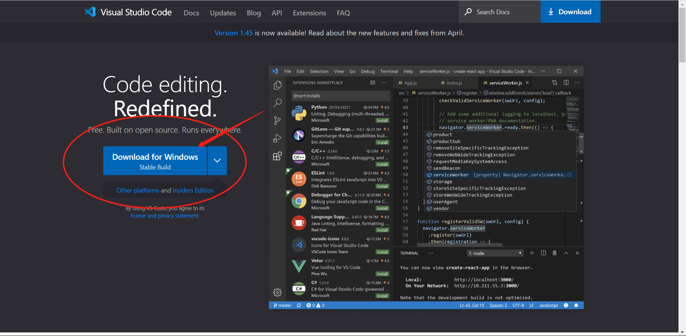
选择合适系统的软件版本
下载Go语言的安装包
下载地址：国内可以下载的镜像地址
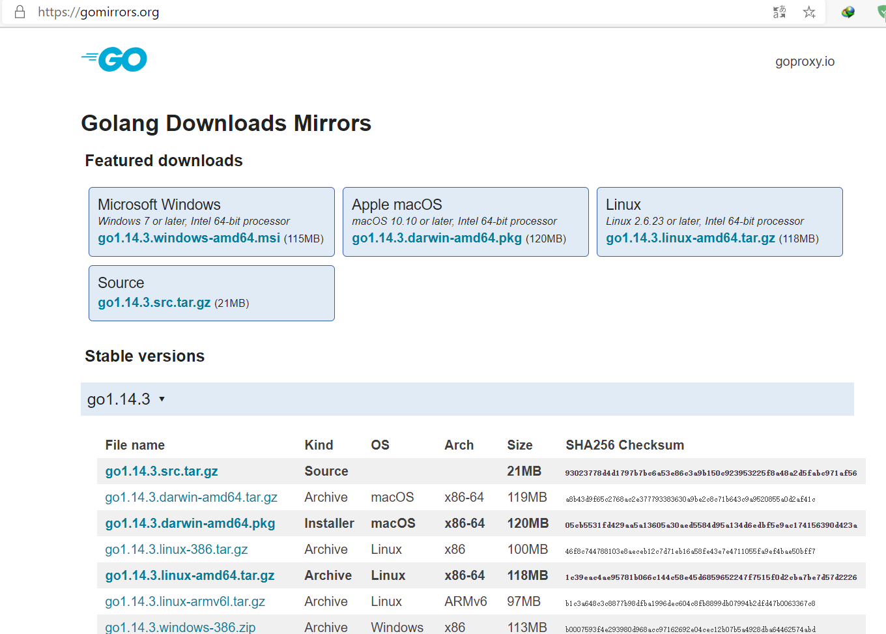
选择合适系统的软件版本
配置Go环境变量
配置
GOROOT,GOROOT的路径是Go安装包的安装路径，每个人选择的路径不一样，选择自己安装的路径即可，然后添加到系统环境变量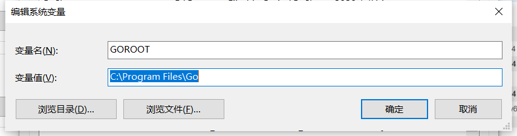
配置
GOPATH，GOPATH为Go工具包的下载路径，这个路径和GOROOT要区分开，不是同一个路径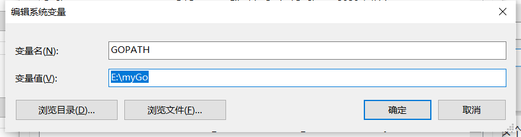选择一个自己认为适合的路径
配置
GOPROXY，GOPROXY，是下载Go语言工具包和安装包等其他工具包的代理服务器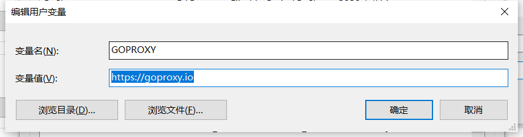
测试环境变量配置
打开cmd，或者Windows PowerShell，
输入
go version,查看Go环境变量是否配置正确输入
go env,查看环境变量是否配置正确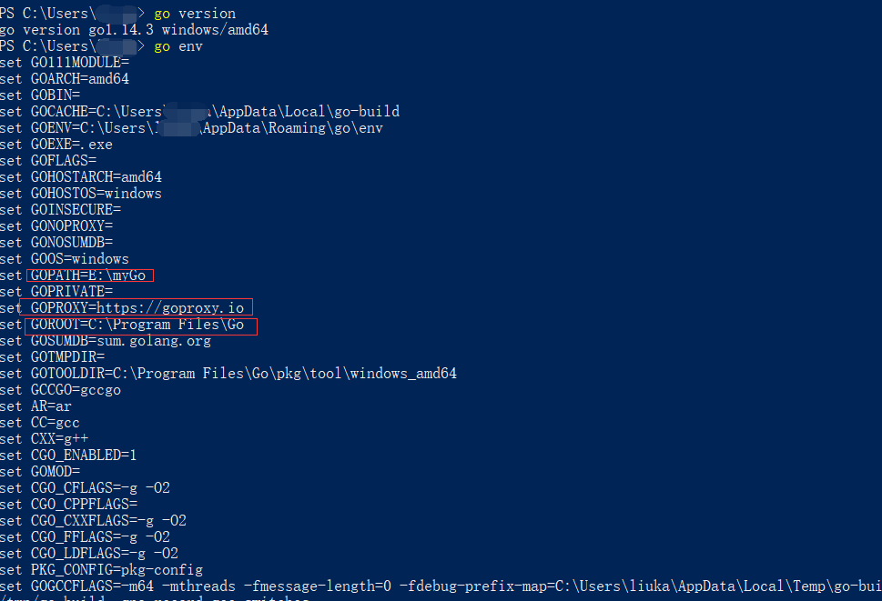
如图所示查看这几项，如果和配置的一致，说明环境变量配置没有问题
在VSCode中下载Go开发插件
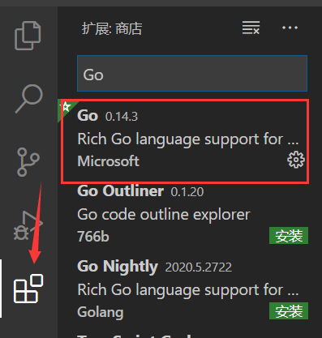
在插件商店搜索安装即可
然后点击左上角的:文件–>打开文件夹–>选择一个工作区间
新建一个hello.go的文件
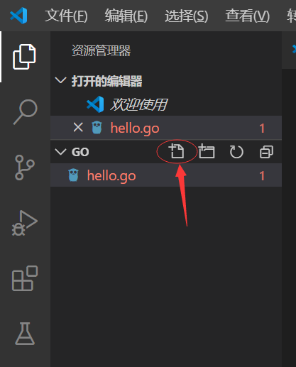
VSCode会提示安装所需要的工具包，选择install All即可
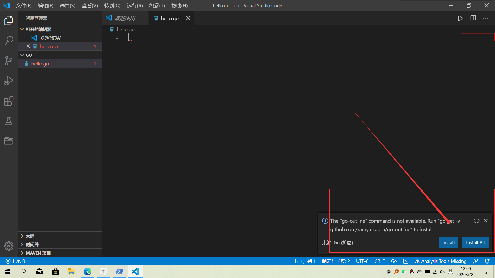
然后下面就会提示缺少的工具包，自动安装
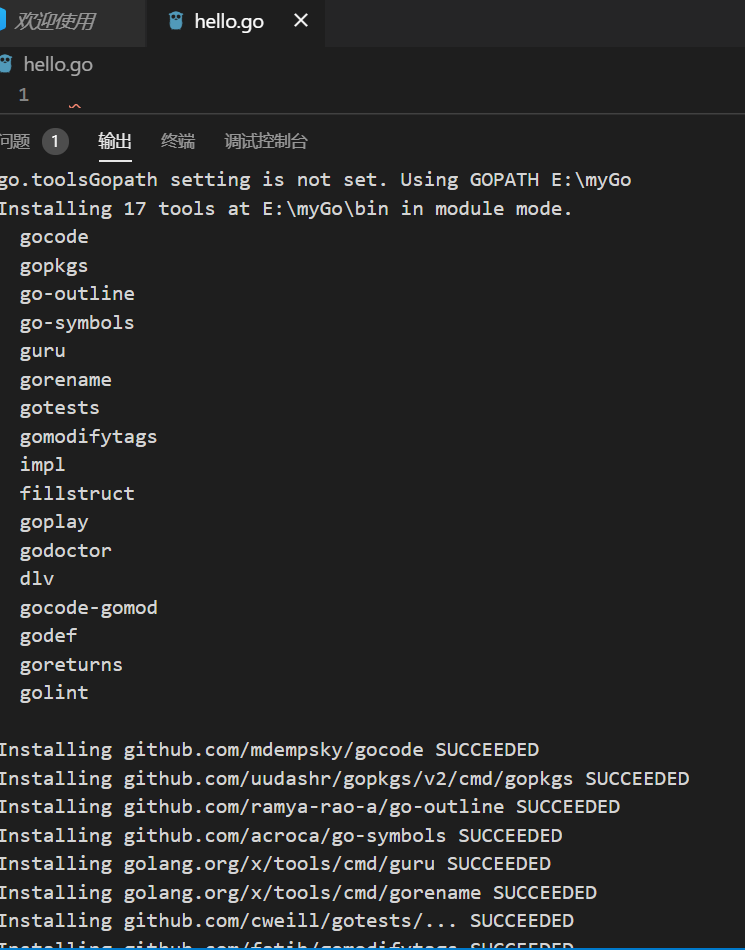
由于配置了代理服务器原因，下载很快，不到3分钟就下载完
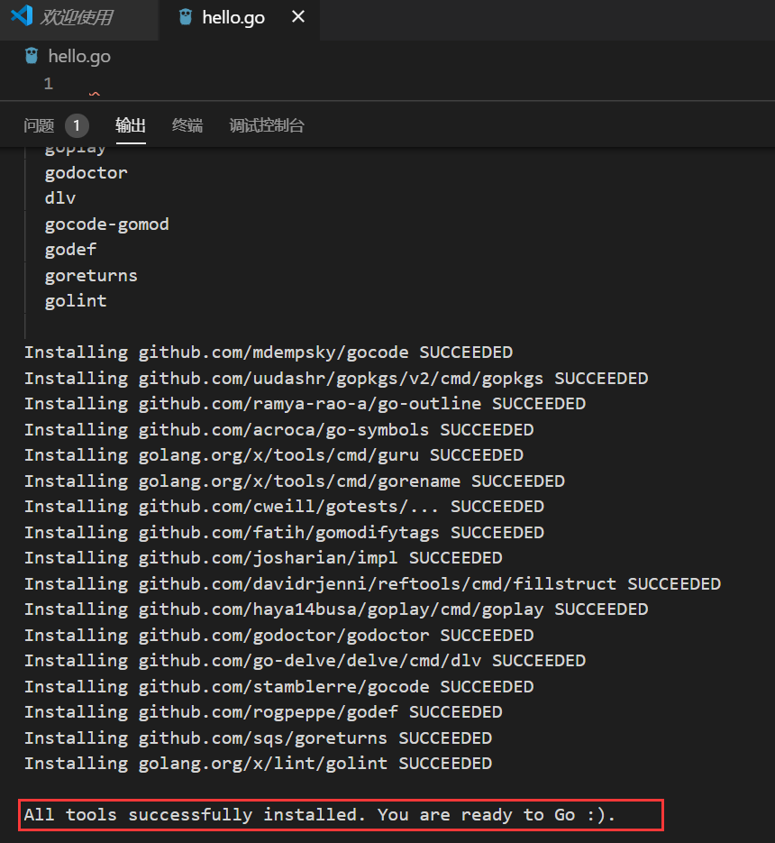
下载完毕后重启VSCode
编写hello.go
1
2
3
4
5
6
7
8package main
import "fmt"
func main() {
fmt.Println("hello world")
}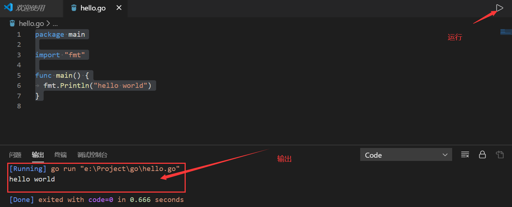
配置setting.json
1
2
3
4
5
6
7
8
9
10
11
12
13
14
15
16"go.delveConfig": {
"go.buildOnSave": true,
"go.lintOnSave": true,
"go.vetOnSave": true,
"go.buildTags": "",
"go.buildFlags": [],
"go.lintFlags": [],
"go.vetFlags": [],
"go.coverOnSave": false,
"go.useCodeSnippetsOnFunctionSuggest": false,
"go.formatOnSave": true,
"go.formatTool": "goreturns",
"go.goroot": "C:\\Program Files\\Go",
"go.gopath": "E:\\myGo",
"go.gocodeAutoBuild": false
}配置完毕
-------------本文结束感谢您的阅读-------------